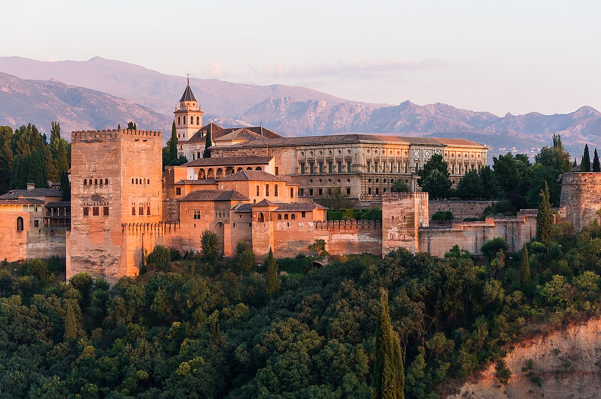
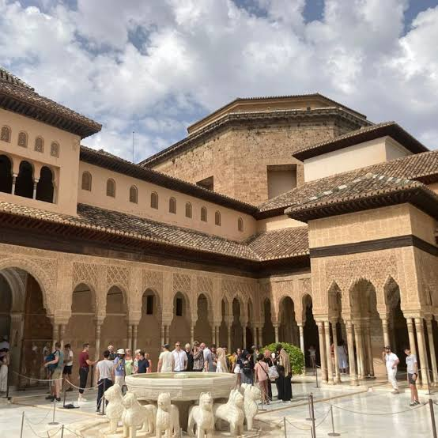
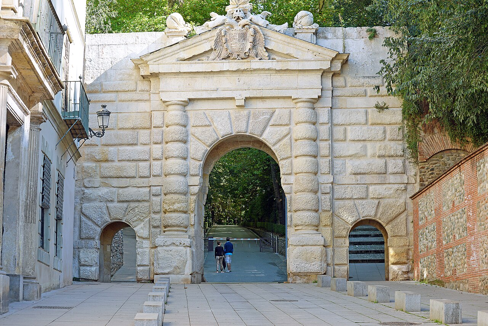
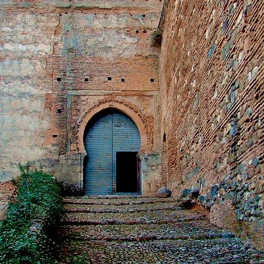
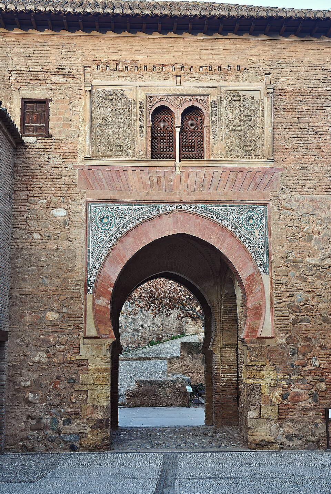
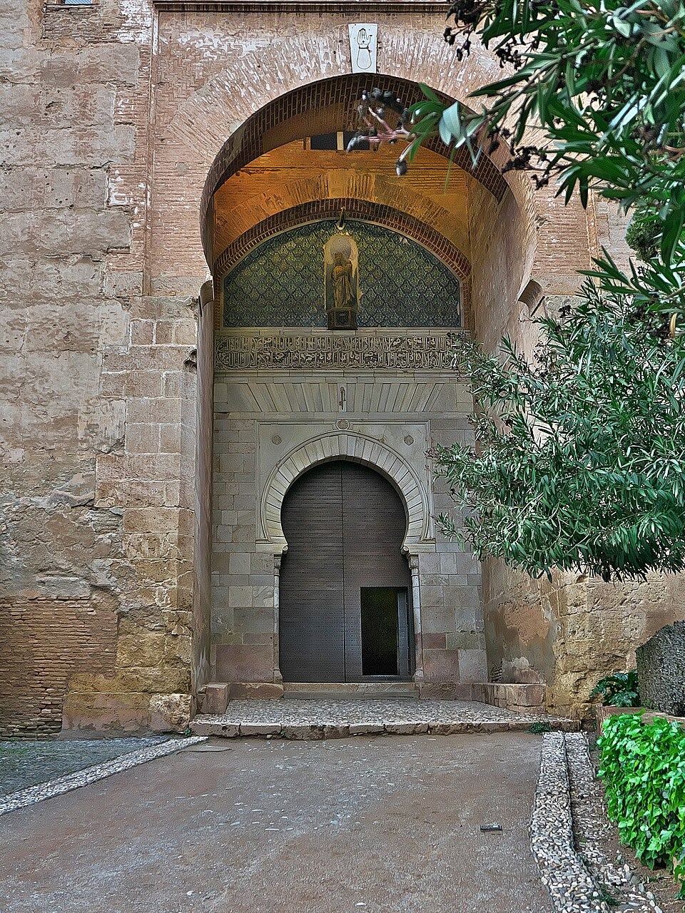
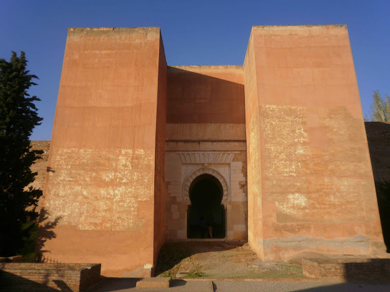

INICIO
La Alhambra es un complejo monumental sobre una ciudad palatina andalusí situada en Granada, España. Consiste en un conjunto de antiguos palacios, jardines y fortalezas (alcazaba, del árabe: القصبة al-qaṣbah: 'ciudadela') inicialmente concebido para alojar al emir y la corte del reino Nazarí, más tarde como residencia de los reyes de Castilla y de sus representantes. Su singularidad artística radica en los interiores de los palacios nazaríes, cuya decoración está entre las cumbres del arte andalusí, así como en su localización y adaptación, que generó un paisaje nuevo pero totalmente integrado con la naturaleza preexistente. Además, alberga un museo de arte andalusí, la pinacoteca principal de la ciudad y un antiguo convento convertido en parador nacional.

MEDINA
La medina se encontraba al servicio de la corte, toda una ciudad ideada para cubrir las necesidades del palacio. Existían tres calles principales, que unían y conectaban todas sus partes:
- la calle Real Baja: da acceso al patio de los Leones, al cementerio real y a los jardines del Partal. También sirve de foso entre la medina y la zona palaciega.
- la calle Real Alta: es la vía principal. Parte de la puerta del Vino, construida por Yusuf I y remodelada por Muhammad V, y sigue un recorrido hasta el palacio de los Abencerrajes y el convento de San Francisco, donde se convierte en eje de la zona artesanal. También servía como eje conductivo de la acequia real, ya que llegaba hasta la torre del Agua.
- la calle de Ronda: también conocida como la del Foso, ya que recorre todo el perímetro de las murallas, poniendo en relación todos los elementos del conjunto y serviría de foso en caso de asedio.

ACCESOS
Las diferentes vías de acceso al recinto de la Alhambra que se han abierto de su inicio son:
|  |
 |
 |
 |
 |
| Puerta de las Granadas | Puerta de las Armas | Puerta del Vino | Puerta de la Justicia | Puerta de los Siete Suelos |